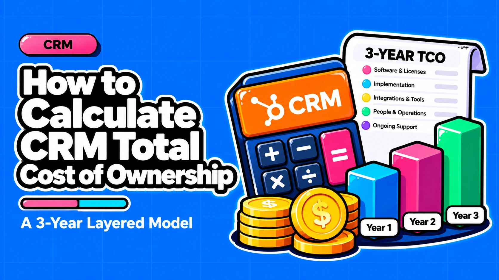

How to Calculate CRM Total Cost of Ownership: A 3-Year Layered Model

Direct answer: Model CRM total cost of ownership (TCO) over three years across six layers: net license, attached and metered costs, one-time implementation, operations, escalation, and change and adoption. Use your actual quoted price, not the list price, and run three cases (low, expected, high) for every usage-driven input. The license is the least informative number in the model. Every price in this article is dated 6 October 2026 and illustrative; verify against vendor pages before use.
- The license is one layer: Salesforce's own TCO guidance says licensing fees alone leave out some of the most significant CRM expenses.
- Six layers, three years: Net license, attached and metered, one-time implementation, operations, escalation, and change and adoption give a model you can rebuild for any platform.
- Build from your quote: Net quoted prices, your headcount plan and low, expected and high cases replace list prices and unsourced benchmarks.
- TCO constrains, fit decides: Rank options on TCO and architecture fit together, so the cheapest model does not win by default.
Questions this article answers
- What does CRM TCO include and why does the license price mislead?
- How is the CRM license line actually built?
- Which six cost layers sit beneath the sticker price?
- How do you cost the operations layer?
- How should you model attached and metered costs, including AI?
- How do you build a 3-year CRM TCO worksheet?
- Which TCO errors matter most, and should the lowest TCO win?
- What should you do after building the TCO model?
- Plus 4 FAQs answered below
What does CRM TCO include and why does the license price mislead?
CRM TCO is every cost of owning the system over a fixed horizon, typically three years, at the price you actually pay rather than the list price. The license misleads because it is the one number buyers compare and the one number that leaves out implementation, operations, escalation, and change.
Salesforce's TCO guidance splits cost into four components: licensing, implementation, ongoing operations, and efficiency gains through integration. We use it for that structure only. Its claim that a unified platform removes hidden costs is a vendor argument, not established fact. The same page defines implementation scope as discovery and process mapping, data cleanup and migration, permissions, workflows and customizations, integrations with existing apps, and staff training.
Our view is that three years is the right horizon. It captures onboarding, at least one renewal and seat growth. One year hides escalation, and five years mostly adds guesswork unless a re-platform decision is in scope.
Numbers not to reuse. "Licensing is 30-40% of CRM spend" is repeated by agency guides such as LowCode Agency with no primary study behind it. "70% of Salesforce implementations fail" and "$150K-$1.5M for 100 users over 3 years" circulate in secondary sources with no primary citation. Compute your own license share from the worksheet below.
How is the CRM license line actually built?
The license line depends on edition, seat type and feature gates, so cost per user is meaningless without the hub and seat mix. List price, quoted price and net-effective price are three different numbers, and only the last two belong in a TCO model.
HubSpot shows the seat-mix problem: Sales Hub prices per seat, while platform-fee hubs price differently, so one "HubSpot cost per user" figure blends two pricing models. Salesforce shows the volatility problem. It prices editions per user per month, and it raised Enterprise and Unlimited list prices by an average of 6% effective August 1, 2025, with no planned change to Starter or Pro (Salesforce).
HubSpot inputs (per seat per month, as of 6 Oct 2026, verify on HubSpot's pages):
- Sales Hub Professional is $90 on annual billing or $100 monthly. Enterprise is $150 (HubSpot). The catalog lists Professional "from $100" (HubSpot catalog).
- Sales and Service seats cost the prices above. Core Seats are roughly $45-50 (Professional) or $75 (Enterprise) for extra seats on platform hubs, and view-only seats are reported as free, so seat mix is a cost lever (HubSpot).
- For new customers after March 5, 2024, Sales Hub has no seat minimums, and full Professional or Enterprise functionality requires a Sales Seat. The retrieved catalog copy may be dated (HubSpot catalog).
- One third-party source reports that Professional needs a separate quoting add-on (Docket). It is a single-source claim, so verify it before modeling.
Salesforce inputs: Edition ladder runs Starter Suite, Pro Suite, Enterprise, Unlimited and Agentforce 1. Sources conflict on 2026 list prices. Treat no edition price as current until you check salesforce.com. Your quote, by edition and user type, replaces every published figure.
Which six cost layers sit beneath the sticker price?
Model six layers: net license, attached and metered, one-time implementation, operations, escalation, and change and adoption. Platform choice moves cost between layers rather than removing it.
The six-layer split is our synthesis of Salesforce's four-component model and the hidden-cost lists in agency guides, not a published standard. We separate license from attached costs because they scale on different drivers: seats for one, usage or a percentage of license for the other. We separate operations from change because operations is the recurring cost of running the system, while change is the cost of altering it.
- Net license: the per-seat price after discounts, by edition and seat type. Consequence: HubSpot Sales Hub Professional is $90 per seat on annual billing and $100 monthly, so billing basis alone moves the line (HubSpot).
- Attached and metered: recurring costs outside the seat price, such as credits, storage, success plans and AI add-ons. Consequence: Salesforce Premier Success is 30% of net license fees, so it adds $36,000 a year on $120,000 net licenses if bought separately (arithmetic from Salesforce).
- One-time implementation: onboarding, discovery, migration, integrations and training, paid mostly in year 1. Consequence: HubSpot lists onboarding at $1,500 (Professional) and $3,500 (Enterprise) (HubSpot). We found no independent Salesforce implementation benchmark, so use a partner quote.
- Operations: the people and tools that run the system, including admin or retainer, apps, middleware and training. Consequence: US Salesforce Administrator benchmarks run from an $81,537 average (Payscale) to a $120,000 median total compensation (Levels.fyi), before benefits, tax and tooling.
- Escalation: price growth after signing, from renewal uplift, list-price changes and seat growth. Consequence: three consecutive 6% increases compound to about 19% cumulatively (arithmetic: 1.06³ = 1.191).
- Change and adoption: the cost of altering the system after go-live, such as change requests, new objects, integrations, tier upgrades and retraining, plus exit or re-platform cost if the architecture does not fit. Consequence: in our view, onboarding fades after year 1 but these costs recur, and no source quantifies exit cost, so give it an explicit line.
Interpretation, not a measured comparison: HubSpot's published model tilts cost toward seats, onboarding fees, contact tiers and credits. Salesforce's tilts toward edition upgrades, add-ons, success plans, storage and the admin or partner labor a more configurable platform needs. Because Premier Success is bundled with Unlimited and Agentforce 1 (Salesforce), compare an edition upgrade against Enterprise plus a 30% success plan.
How do you cost the operations layer?
Size labor by who changes the system and how often, then cost it as a full-time admin, a fractional owner or a partner retainer, with an explicit loaded-cost assumption.
User count is a poor proxy for workload. Three drivers matter more: configuration debt (accumulated custom fields, automations and permissions), the number of live integrations, and the volume of change requests and who approves them. The logic applies to both platforms, and we found no independent admin FTE-ratio data for either. Put apps, middleware and training in this layer too.
- Full-time admin fits when changes are continuous, several integrations are live and one person must own permissions, data quality and releases. Cost it at salary plus your finance team's loaded-cost multiplier.
- Fractional owner fits when an existing RevOps or ops person can own the data model and release process and changes arrive in batches. Cost it as a share of that person's loaded cost.
- Partner retainer fits when changes are periodic and no internal person has the platform skills. Industry sources cite $2,000-$5,000 per month, and $80,000-$130,000 per year for a dedicated admin (LowCode Agency). These are practitioner heuristics, not audited benchmarks.
Hypothetical illustration for a generic team, using only the ranges above, before any loaded-cost multiplier (we do not supply one):
| Case | Monthly cost | Annual cost | 3-year total |
|---|---|---|---|
| Low | $2,000 retainer | $24,000 | $72,000 |
| Expected | $5,000 retainer | $60,000 | $180,000 |
| High | Dedicated admin | $130,000 | $390,000 |
How should you model attached and metered costs, including AI?
Treat metered and AI costs as low, expected and high volume scenarios, subtract the included allowance, and price the remainder at the vendor's rate per unit.
Each meter has its own driver. HubSpot Credits are one account-level pool shared by Breeze agents, AI workflow actions and buyer-intent. The monthly allowance depends on your highest subscription tier (500 Starter, 3,000 Professional, 5,000 Enterprise), the pool resets monthly with no rollover, and extra credits cost about $10 per 1,000. Since April 14, 2026, Customer Agent bills 50 credits ($0.50) per resolved conversation and Prospecting Agent 100 credits ($1.00) per lead recommended (Marketing Mary).
Salesforce meters (as of 6 Oct 2026, all optional, verify current terms):
- Agentforce add-ons start at $125 per user per month on Enterprise and Unlimited, and Agentforce 1 editions at $550 (Salesforce).
- Flex Credits are $500 per 100,000 credits, introduced May 15, 2025, per a pricing tracker (SPP Pricing Observatory).
- Enterprise storage includes 10 GB of data plus per-user increments and 10 GB of files plus 2 GB per user license (Salesforce Help). Overage rates appear only in secondary sources, so check them with Salesforce.
Monthly metered cost = max(0, volume × credits per outcome - monthly allowance)
× (price per 1,000 credits / 1,000)Hypothetical illustration: Customer Agent at 50 credits per resolution, a Professional-tier allowance of 3,000 credits, and $10 per 1,000 extra credits. Volumes are invented for arithmetic only.
| Scenario | Resolved conversations / month | Credits above allowance | Extra cost / month |
|---|---|---|---|
| Low | 200 | 7,000 | $70 |
| Expected | 600 | 27,000 | $270 |
| High | 1,500 | 72,000 | $720 |
How do you build a 3-year CRM TCO worksheet?
Year-N cost equals net license plus attached and metered plus operations plus escalation, plus one-time implementation in year 1 and change cost as it occurs. Run three cases and look at the range, not the point estimate.
Escalation has two sources that buyers conflate. List-price changes, such as Salesforce's average 6% rise on Enterprise and Unlimited effective August 1, 2025, pass through to you according to your contract terms. Contractual renewal uplift is a separate clause. Advisors report 5-10% for Salesforce and around 5% for HubSpot, and recommend negotiating caps (commonly 3-5%), multi-year price locks and seat-reduction flexibility (LowCode Agency).
- Collect the quote. Get net seat prices by hub, seat type and billing basis, and date them, because list prices are not what you pay.
- Plan seats by year. Enter headcount for years 1 to 3 including growth, because seat growth is part of escalation.
- Add year-1 one-time costs. Include onboarding, partner work, migration and integrations, because they do not repeat.
- Cost operations. Use your low, expected and high labor case, because labor is recurring and varies by case.
- Add metered and attached costs. Subtract allowances from volume scenarios and add success plans or storage, because flat lines misstate usage-driven cost.
- Apply escalation. Multiply license and percentage-based items by (1 + u)^(N-1) for uplift u, because increases compound.
- Run three cases. Repeat with low, expected and high inputs, because the range matters more than the point estimate.
Year N = seats(N) × net seat price × 12 × (1 + u)^(N-1)
+ attached/metered(N) + operations(N) + change(N)
+ implementation (year 1 only)
3-year TCO = Year 1 + Year 2 + Year 3Compounding is precise, not intuitive. Three consecutive 6% increases give 1.06³ = 1.191, about 19% above the starting price. If the first increase applies at the year-2 renewal, year 3 is 1.06² = 1.1236 times year 1, about 12% higher. The 19% arrives only after the third increase.
Hypothetical illustration, arithmetic only, 10-seat team. HubSpot figures use the $100 monthly rate and $1,500 onboarding (HubSpot), as of 6 Oct 2026. Salesforce is formula-only because edition prices conflict. L = 10 × your quoted seat price × 12; u = your uplift.
| Layer | Year 1 | Year 2 | Year 3 |
|---|---|---|---|
| HubSpot Professional license | $12,000 | $12,000 | $12,000 |
| HubSpot onboarding | $1,500 | $0 | $0 |
| HubSpot subtotal | $13,500 | $12,000 | $12,000 |
| Salesforce net license | L | L × (1 + u) | L × (1 + u)² |
| Salesforce Premier (if bought separately) | 0.30 × L | 0.30 × L × (1 + u) | 0.30 × L × (1 + u)² |
At the $90 annual rate, HubSpot year 1 is $10,800 + $1,500 = $12,300. The HubSpot rows are flat to isolate the sourced arithmetic; apply the same (1 + u) to both platforms and add operations, metered and change rows from your own cases.
Which TCO errors matter most, and should the lowest TCO win?
TCO is a constraint, not a decision rule: the cheapest model wins only if it also meets your customization, integration and growth requirements.
Integrations and data quality are not extras: Salesforce's own implementation scope lists data cleanup, migration and integrations. Discount ranges published by advisory and negotiation vendors come from sources with commercial interests and are unaudited, so the only price that belongs in the model is your actual quote.
☐ Use net quoted prices, not list prices or advisor discount ranges.
☐ Cost integrations, data cleanup and migration inside implementation.
☐ Treat onboarding as year 1 only, then add recurring change requests, new objects, integrations and tier upgrades in the change layer.
☐ Replace unsourced benchmarks with your own quote and worksheet.
☐ Add a "cost of getting it wrong" line for rework, re-platform and exit.
Our decision rule: drop any option that fails a hard requirement, then compare the remaining options on their low, expected and high TCO ranges. When ranges overlap, choose on architecture fit.
What should you do after building the TCO model?
Fill in the six layers from your own quote, run three cases, then test the cheapest range against your architecture requirements. The worksheet gives you a cost range per option, not a final answer.
It cannot tell you whether an option's data model, integrations and customization limits fit how your team sells, so that is the next question. Keep each input date-stamped and re-verify prices before signing, because both vendors have changed pricing or packaging since 2024: HubSpot's per-seat model for new customers from March 2024 and Salesforce's list increase in August 2025.
If you want to pressure-test a TCO model against your architecture requirements, our CRM Architecture and Selection Advisory is built for that step.
Frequently asked questions
Is the CRM license really only 30-40% of total cost?
No primary study supports that figure. It is a heuristic repeated by agency guides, and the share varies by team. Calculate your own license share by dividing the three-year license line by the three-year worksheet total, using net quoted prices.
Is HubSpot cheaper than Salesforce?
Neither is cheaper by default. The answer depends on seat mix, hubs, add-ons, labor and contract terms, and available sources compare only parts of each stack. Build the worksheet with your own quotes for both.
Does HubSpot need an admin too?
Any configurable CRM needs someone who owns changes, permissions and data quality, but we found no independent data on admin FTE requirements by platform. Size labor by change rate: how many integrations, automations and change requests the system carries, and who approves them.
What time horizon should a CRM TCO cover?
Three years. That window captures onboarding, at least one renewal and seat growth. Extend to five years only if a re-platform decision is in scope, because exit and switching cost then becomes part of the comparison.
Sources
- Enterprise CRM Total Cost of Ownership: Going Beyond the Sticker Price, Salesforce
- CRM Total Cost of Ownership: What You Really Pay, LowCode Agency
- HubSpot's Sales Hub pricing guide, HubSpot Blog
- HubSpot Product and Services Catalog, HubSpot Legal Center
- HubSpot Sales Hub Pricing 2026, Docket
- Updated Product Packaging and Pricing, Salesforce News
- Salesforce: the pricing arc, SPP Pricing Observatory
- Salesforce Success Plans and Professional Services Pricing, Salesforce
- Data and File Storage Allocations, Salesforce Help
- Salesforce Administrator Salary in 2026, Payscale
- Salesforce Administrator Salary, Levels.fyi
- How Do HubSpot Breeze Credits Work?, Marketing Mary
- Salesforce Price Increases at Renewal 2026, LowCode Agency
Want to pressure-test your CRM cost model against your architecture requirements before signing?
Contact →